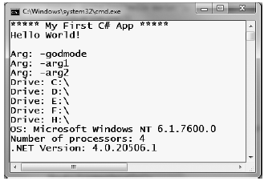

The Environment class exposes a number of extremely helpful methods beyond GetCommandLineArgs(). Specifically, this class allows you to obtain a number of details regarding the operating system currently hosting your .NET application using various static members. To illustrate the usefulness of System.Environment, update your Main() method to call a helper method named ShowEnvironmentDetails().
static int Main(string[] args) { ... // Helper method within the Program class. ShowEnvironmentDetails(); Console.ReadLine(); return -1; }
Implement this method within your Program class to call various members of the Environment type.
static void ShowEnvironmentDetails() { // Print out the drives on this machine, // and other interesting details. foreach (string drive in Environment.GetLogicalDrives()) Console.WriteLine("Drive: {0}", drive); Console.WriteLine("OS: {0}", Environment.OSVersion); Console.WriteLine("Number of processors: {0}", Environment.ProcessorCount); Console.WriteLine(".NET Version: {0}", Environment.Version); }
Figure 3-4 shows a possible test run of invoking this method. If you did not specify command-line arguments via the Visual Studio 2010 Debug tab, you will not find them printed to the console.
Figure 3-4. Displaying system environment variables
The Environment type defines members other than those shown in the previous example. Table 3-1 documents some additional properties of interest; however, be sure to check out the .NET Framework 4.0 SDK documentation for full details.
Table 3-1. Select Properties of System.Environment
| Property | Meaning in Life |
|---|---|
| ExitCode | Gets or sets the exit code for the application. |
| MachineName | Gets the name of the current machine. |
| NewLine | Gets the newline symbol for the current environment. |
| StackTrace | Gets the current stack trace information for the application. |
| SystemDirectory | Returns the full path to the system directory. |
| UserName | Returns the name of the user that started this application. |
Source Code The SimpleCSharpApp project is located under the Chapter 3 subdirectory.